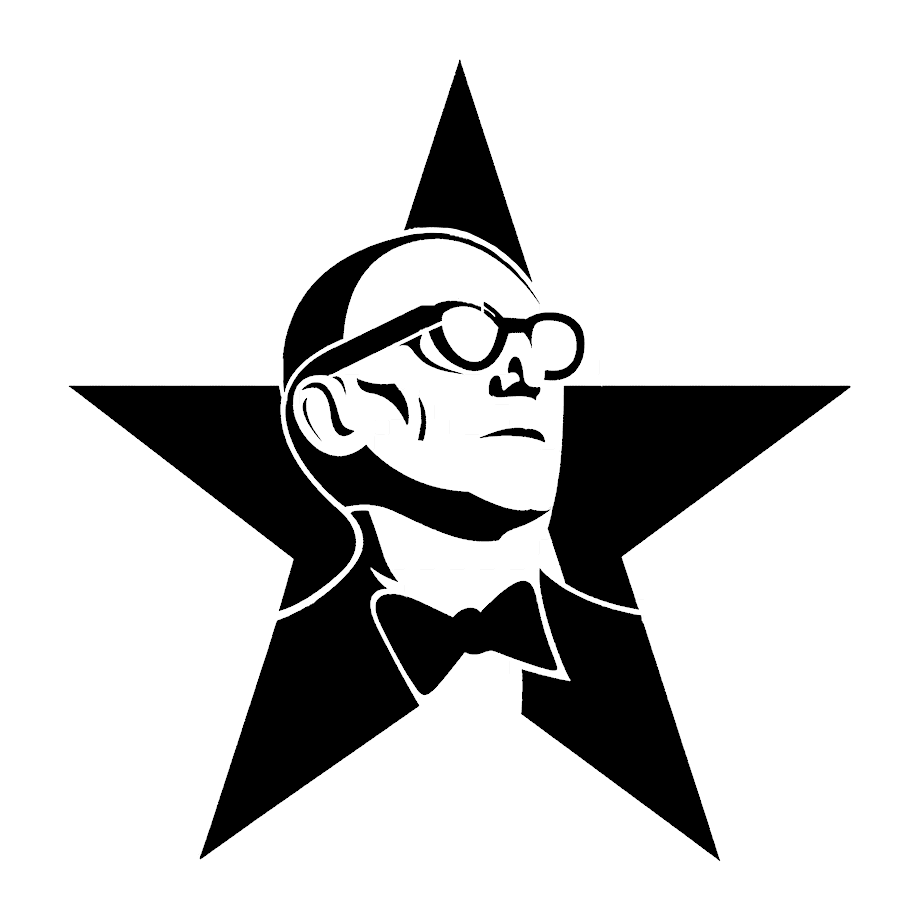
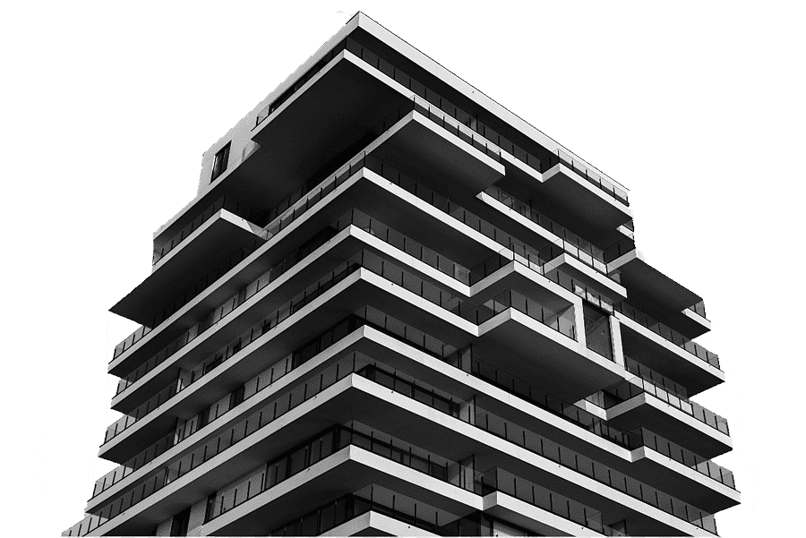

Origem e características da arquitetura brutalista

A arquitetura brutalista surgiu na década de 1950, destacando-se pelo uso expressivo do concreto aparente e por formas geométricas simples. O termo "brutalismo" deriva do francês "béton brut", que significa "concreto bruto", enfatizando a exposição direta dos materiais de construção sem revestimentos ou ornamentações.
Acesse o link para assistir um vídeo
Influência no Brasil
No Brasil, o brutalismo ganhou destaque a partir da década de 1960, especialmente em São Paulo, com a chamada Escola Paulista. Arquitetos como João Vilanova Artigas e Lina Bo Bardi foram pioneiros na adaptação desse estilo ao contexto brasileiro. O Museu de Arte de São Paulo (MASP), projetado por Lina Bo Bardi e inaugurado em 1968, é um exemplo emblemático, com sua estrutura de concreto aparente e formas geométricas marcantes.
